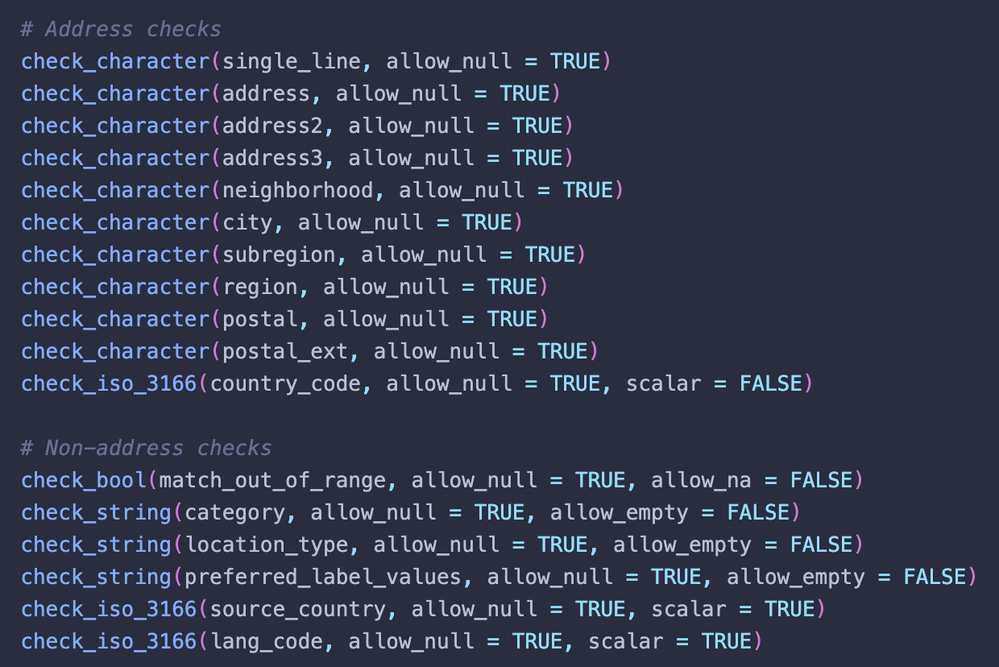

scale_by <- function(x, y) {
x / y
}Type safe(r) R code
Robust type checking with r-lib
r
Introduction to r-lib type safety checks
Type safety is all the rage these days. It’s the (one of the many) reason why people love Rust , TypeScript, and Pydantic.
Knowing what type of data is coming in and going out of a function is critical! It means fewer bugs and more robust code.
I will introduce you to the r-lib standalone checks. Here is a peek of some code fromarcgisgeocode that helps make the function more type safe.

What is type safety?
A type safe language is one where each variable has a known and validated type. R is not type safe.
When you define a function in a type safe language, you have to specify the input types and the output types.
Here is a function that scales one numeric variable by another.
This is not type safe. I can pass in a character vector a list, NULL, or even a POSIXct class. Sometimes R will do the appropriate conversions for us. But other times it wont.
scale_by(100, "10")Error in x/y: non-numeric argument to binary operatorYou want to be in control of your function!
Why type safety is important
Type safety allows us to catch and prevent errors early and thus prevent unintended bugs. Without type safety, R may perform silent coercions or your code may run as R intended—but not as you intended.
Adding type guarantees ensures that your code functions as intended.
Type safety in other languages
Type safety is becoming an increasingly common and more important aspect of programming. People love Rust for its type safety among other things. Rust (and C/++ and Java and Scala etc) is a statically typed language.
Rust’s static typing
In Rust, you define a type and that type is unique.
struct Person {
name: String,
age: u8
}To create a person you would write Person { name: "Josiah".to_string(), age: 28 } . This is recognized as a Person struct. In Rust, a function must know its argument types, for example:
fn calculate_birth_year(person: &Person) -> i32 {
// use chrono::DateLike
let now = chrono::Utc::now();
(now.year() - person.age as i32)
}This function takes a reference to a Person and calculates (roughly) what year they were born in. If I had another struct called Me with the same exact fields, this wouldn’t work.
struct Me {
name: String,
age: u8
}Even though Me and Person have the exact same field types, they are recognized as different types.
This is different than how JavaScript does this.
TypeScript Interfaces
The JavaScript folks now have TypeScript which is pseudo-type safety. TypeScript uses duck typing.
If I understand TypeScript correctly, they use a type interface. These feel similar to struct definitions in Rust.
interface Person {
name: string;
age: number;
}In TypeScript, these interfaces are a way to standardizes what a type looks like. But not an actual type themself! This is (I think), the equivalent JavaScript code to calculate the birth year of an individual.
function calculateBirthYear(person: Person) {
Date().getFullYear() - person.age
}With this, though, you don’t actually need to have an instance of Person . Instead, you can have a normal JavaScript object that looks (and quacks) just like the Person type.
const john: Person = {
name: 'John Doe',
age: 30
}
let jane = { name: 'Jane Doe', age: 28 }
console.log(calculateBirthYear(john));
console.log(calculateBirthYear(jane));These both work.
Type safety in R
Like JavaScript, and Python (yes I know about type hinting, thats opt in and different), R doesn’t do any validation of arguments. TypeScript can add a layer of Duck Typing checks to the functions which is great for them. But what about us?
How can we make our R functions safer? In R, (almost) everything is a vector. The r-lib team has (very quietly) created what I think is the greatest contribution to the tidyverse ecosystem in a long time in the form of standalone type check functions.
Stand-alone type checks
The standalone functions are quite unique. I’ve never seen anything quite like them. They’re literally standalone R files with a bunch of handy R functions. It’s like adding a package but without adding it as a dependency.
These are functions prefixed with check_ that test inputs for the most common types. They provide beautiful error messages and have commonly needed flexibility.
Add type checks to your project
The usethis package has a handy function use_standalone() which will add these functions for you.
usethis::use_standalone("r-lib/rlang", file = "types-check")This is supposed to be used in the context of an R package but can still be used in any R script. THe function requires an R directory to be found at the root.
Standalone type checks
We can get really far in enhancing type safety
https://usethis.r-lib.org/reference/use_standalone.html
Since this isn’t an R package, I will source the functions. Otherwise, run devtools::load_all() for the functions to become available.
getwd()[1] "/Users/josiahparry/github/quarto-site/posts/2024-06-30-type-safety"
Note
These standalone checks require that rlang be an imported package. Use usethis::use_package("rlang"). It is a very small package and has no dependencies. Very little to lose by adding it.
Scalar checks
R doesn’t have the concept of a scalar. Though using a scalar is still very useful in R.
The standalone checks provide helpers for checking scalar values. There a quite a few but the ones I use most commonly are:
check_string()check_bool()check_number_whole()check_number_decimal()
Usage
Each of these functions provide the arguments:
allow_naallow_null
This is helpful because using NULL is often used as a default argument for optional arguments.
For example we can check that something is a string:
check_string("a")But when it is a character vector:
check_string(c("hello", "world"))Error:
! `c("hello", "world")` must be a single string, not a character vector.This gives us an informative error telling the user what type was found and expected.
In the case of NULLs we can provide the allow_null argument which allows the test to pass.
check_string(NULL)
check_string(NULL, allow_null = TRUE)Vector checks
In addition to scalar checks, there are many handy vectorized checks.
There are vector checks these are:
check_character()check_logical()check_data_frame()
Error:
! `1:2` must be a character vector, not an integer vector.Error:
! `c("a", "b")` must be a logical vector, not a character vector.Error:
! `list(a = 1, b = 2)` must be a data frame, not a list.